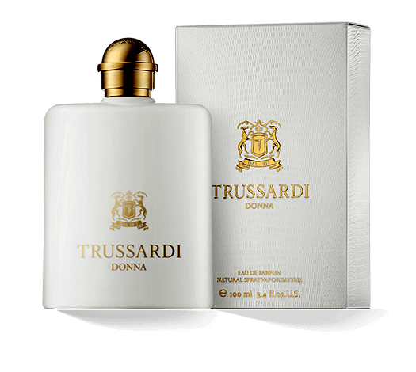

-
Achtergrond informatie
Trussardi is een Italiaans luxe modehuis uit Milaan. Trussardi werd in 1911 opgericht door Dante Trussardi als fabrikant van lederen handschoenen. In de jaren tachtig begon het bedrijf met de productie van confectiekleding, naast producten als parfums en jeans. Het bedrijf bracht zijn eerste parfum "Trussardi" uit in 1980, en "Trussardi Uomo" voor mannen in 1983. Het parfum Trussardi Donna werd in 2011 uitgebracht ter ere van 100-jarige bestaan van Trussardi. Het is een damesgeur en tevens eerbetoon aan de geur uit 1980. De makers hebben een geheel nieuwe geur gecreëerd die past in het gedachtegoed van het origineel. De eerste geur van dit parfum is een mix van de fruitnoten yuzu, limoen en andere waterrijke vruchten. De volgende geur bestaat uit oranjebloesem in combinatie met jasmijnthee-extracten en lotus. In het parfum ligt een oriëntaalse basis en deze wordt gevormd door vanille, sandelhout, patchoeli en ceder. Trussardi Donna, is een parfum vol charisma en straalt dezelfde luxe uit als de mode van Trussardi.
Koop deze parfum
